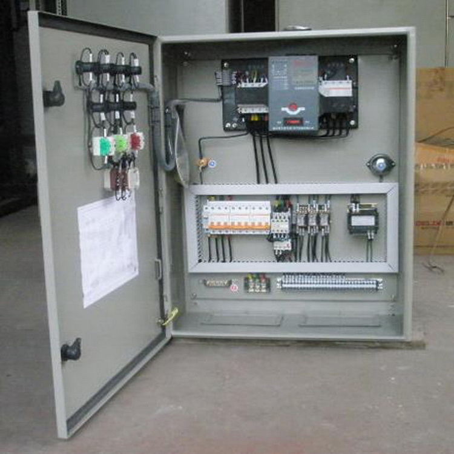

Our services involve the application of ICT in advancing and automation of Information systems in IT industry. Our areas of concern are:
We ensure your Computers communicate properly, the links are reliable at all times for effective transmission. Teslinq plans, designs and develop appropriate Telecommunication systems for your business. Contact us for secure data centres, switching cabinets with reliable cabling.
Computer Networks and Telecommunications Infrastructure

Teslinq takes care of power sections in Telecommunications and Computer Networks. We design reliable power backups to provide effective communication links within communicating devices
Power Distribution Systems
A secure network ensures a secure information. Our focus is to prevent data from being compromised by all available means.
Information & Data Security
Teslinq carry out preventive and corrective maintenance exercises on computer and communication equipments at affordable charges. This is to increase production by the equipments in question.
Maintenance Services
We do installatiions in Closed-Circuit Television [CCTV], Access & monitoring systems and fire / intruder alarms.
Technical Security Installations
Teslinq's technical team offers appropriate advisory to its clients on ICT decisions.
ICT Consultancy
Key Strenghts
In serving information, Teslinq stands out. Here are the key areas which uniquely define us:
Authenticity
Data is a sensitive element in any organization. Data access is to be monitored to ensure any unaothorized handling is prohibited. Teslinq prioritizes this apsect and underlays both protective and preventive mechanisms to curb intrusions.
Secure Information Handling
Teslinq applies high professional skills in equipment handling. This ensures the equipments in question get no exposure to damage. Your safe data is save with us!
Remote Monitoring
With the availability of reliable third-party applications for remote access, Teslinq offers configurations in the best remote access systems. Have the progress of your tasks in your fingertips. Get timely warnings and other useful informations within your hand grip.
Full Backup of Information
Teslinq improvises Data replication for backup processes just incase of equipment failure.